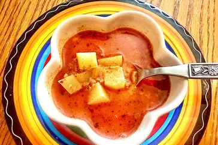

Potato Soup

This delicious potato soup with chorizo is inspired by the popular Mexican breakfast of Papas con Chorizo (Potatoes with Chorizo). Serve it with chips on the side.
Ingredients
- 1 (9 ounce) roll Mexican chorizo
- 1/3 cup chopped onions
- 2 cloves garlic, pressed
- 3 cups chicken broth
- 1 cup diced potatoes
- 1/2 tablespoon chicken bouillon granules (such as Knorr®)
- 1/2 teaspoon ground cumin
- 1/2 teaspoon Mexican oregano
- 1/3 cup heavy cream
- salt and freshly ground black pepper to taste